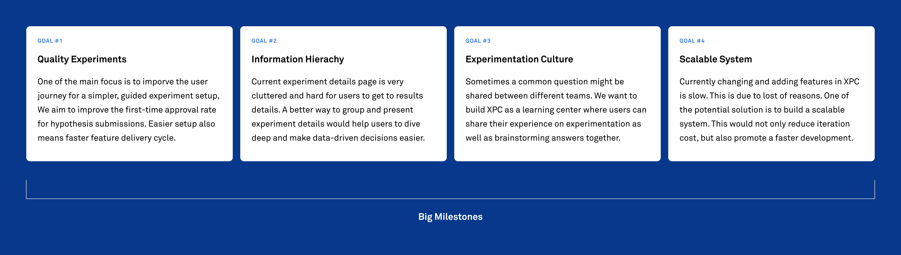
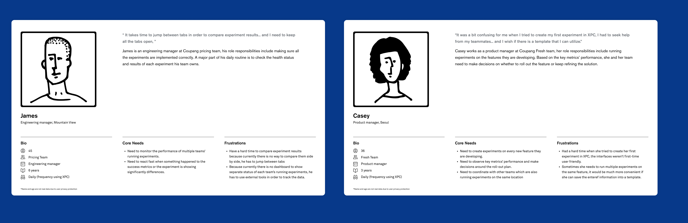

Project Type
User experience
Interaction design
Tools
Sketch & Figma
Zeplin
CSS
Project Length
> 12 months
My Contribution
Research Analysis
User Interviews
Journey Mapping
Wireframing
Design System
Overview
Experiment Center (XPC) is a platform that enable all internal users at Coupang to run quality experiments. It empowers teams to make informed and timely business decisions based on the experiments’ data.
As the chief designer on the Experiment Platform team, I led the redesign of the user interfaces. From ideation to development, over the course of 12 months I’ve worked alongside with interdisciplinary team memberss to craft this platform.

A / EMPATHIZE
A1. Challenge
Different User Types
There are two major types of users using XPC:
-
Experienced Users
-
New Users
These are power users who create experiments on a daily basis. They are looking for more advanced features which enable them to dive deep into the complex datasets.
New users have very little experience in AB testing so creating their first test and monitor/ interpret its data can be quite confusing and imitating. Very often they don’t know where to start.
In order to accommodate both needs and expectations, we were searching to find an optimal balance point between “holding their hands” and “let them freely explore”.
A2. Generative research
Discovering the Dealbreakers
In order to get a clear picture of usability issues in the current experience. We conducted 15 user interviews with full-time employees across all teams to learn what's their daily routines with XPC look like. This is what they said:
A3. Competitive Analysis
Evaluate the viability
Meanwhile I did a competitive analysis about other similar platform’s features, so we can identify unserved or underserved gaps.

We were using Google Sheets because it's the tool that everybody had access to.

B / DEFINE
B1. Key Insights
How might we optimize the XPC
Based on the painpoints that were collected from the user interviews, we tried to emphasize important stages during each user flow.

B2. User Personas
Core Needs
We developed personas in order to understand what different core needs each user type may have. Below are two of them:

B3. User Journey Map
Analyze Opportunities
Based on the painpoints that were collected from the user interviews, we try to emphsize important stages during each user flow. Promoting their outcomes are expected to increase efficiency as well as guiding new users.

B4. Main User Flow
Process mapping
I created a process map that helped me identify relationships and understand the gaps along the experimentation process.


C / IDEATE
C1. Mapping
Contents Architecture
After several meetings with PO and data scientists about what are the full weight issues and potential solutions that might solve them. I created a sitemap to map out all the content branches

In order to walk the team through this sitemap, I put up a slide presentation which they can click to dive in, above are some of the screenshots.
C2. Brainstorming
Layout Exploration
Because Experiment Center (XPC) curates a great amount of data and information, in order to find out what would be the best approach in terms of presenting the information hierachy, I explored different layout options before jumping into vanilla wireframes.

C3. Low-fi
Vanilla Wireframes
For the first run of wireframing, I mapped out all the possible pages. No color or typefaces’ choices involved yet because I want to focus on the contents’ structure first. This also allows me to disregard constraints to explore the most creative solutions. Below are just few out of hundreds...

C4. Iterations
Refinements based on the feedbacks
Vanilla wireframes were barely the first step to construct the whole web application, starting from there I worked with product owner and data scientists to make further decisions on details. After many runs of iterations we had a ‘final’ version. Below is just a glance on the test results’ page evolution.


D / VISUALS
D1. Style Guide
Create Master Symbols
I turned frequent used UI components into master symbols so they can be reused easily and keep its spec consistent between pages. Moreover, I created a ‘playground’ page in Figma which can be used by any team members. Simply through dragging and dropping UI components, other non-design background teammates can visualize any of their ideas with convenience.

D2. Design System
Establish the Design System
XPC design system is composed of universal assets — style guides, components, modules, and page templates which are considered universal or fundamental in nature. This means they can be used as a base for the widest varirty of situations, and extended or adapted for the specific user cases.


E / PROTOTYPE & TEST
E1. High-fi Prototype
Finetuning Details
At the last stage of design, I polished up all the screens and with these two questions in mind:
1. How effortless is for different types of users to complete their tasks?
2. How well would our assumed user flow align with our users’ approach?
.png)
E2. Implementation
Front-end Development
Engineers and I have collaborated on the front-end development together. We used Zeplin for specs references and commenting. We also met with PO and teammates once a week over the course of 12 intervals to debrief on the progress updates, inquire about technical limitations and consistently align the design with our primary goals.

E3. Usability Testings
Usability Tests After Launch
After the first launch, we conducted another usability test in order to observe how our users interact with the new XPC platform. I wrote up a test plan and different scenarios which cover most of the user journeys. The goals of this UT test were mainly for:
-
Problem Discovery
-
Learning Usability of UI
-
Observe Users’ Learning Curve
Uncover as many usability problems as possible. Try to get the most common issues through attempting a few realistic tasks on XPC
How usable is the interface? Problems were addressed and new designs were created in order to solve them. But did those changes actually make the interface easier to use?
It’s inevitable that users might spend more time when they are interacting with new XPC for the first time, but is it easy to start with or is it hard to learn? By having participants attempt the same tasks repeatedly in a study, we can observe users’ learning curve.
UT Test Draft
E4. Insights
Data Analysis
Measure Quantitative Metrics:
-
Time on a task / speed: we can calculate the average time users used to accomplish each task in order to have an idea of which task is easier compare to others, and if one user shows a faster speed on one test would that influences the speed on other tasks as well?
-
Success rate / goal fulfillment : understand user's habit maybe different from team to team, but we can calculate if this difference if significant or not
Measure Qualitative Metrics:
-
Subjective satisfaction / Expectation matching: this data will be collected through participates' answers to certain questions. Because sometimes users maybe expect to accomplish the task through a different method.
-
Perceived effort or difficulty: this data will also be collected through questions or survey at the end, because it's possible for participants to finish the task in a short period of time but still subjectively feel the process is too complex or had confusion. We can collect these feedbacks in order to make each step easier.


F / TAKEAWAYS
F1. What I learnt
‘Final’ Refinements
During the UT, we discovered that some tasks appear easier for specific roles while others don’t. And there is a significant difference on learning habits between product oweners and engineers. Design of an web application is never final, it has to be up-to date as well as adapable to all the upcoming needs. However, the discoveries from the usability testing were extremely helpful as people from each department use this platform differently. Based on the feedbacks, I started another run of refinements.
F2. Team
Special Thanks
My time at Coupang was one of the most fun work experiences I’ve ever had. Being able to learn from some of the most talented people in such a tight knit team, helped me level up my skills and challenge my design thinkings.